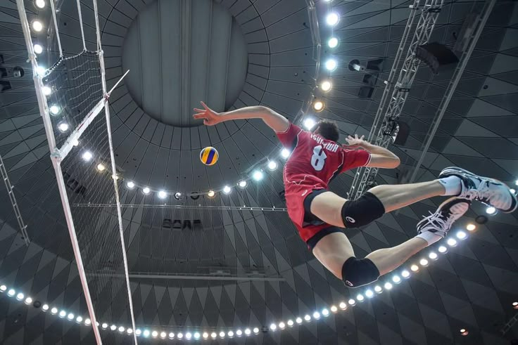

// project
Website Resmi Pekan Olahraga Kolese Kanisius

POR CC adalah website resmi untuk Pekan Olahraga Kolese Kanisius — sebuah ajang olahraga tahunan bergengsi di lingkungan sekolah. Website ini hadir sebagai platform informasi utama yang memuat seluruh detail kegiatan POR CC, termasuk informasi umum acara, teknis dan peraturan setiap cabang lomba, sistem pendaftaran peserta secara online, serta jadwal pertandingan.